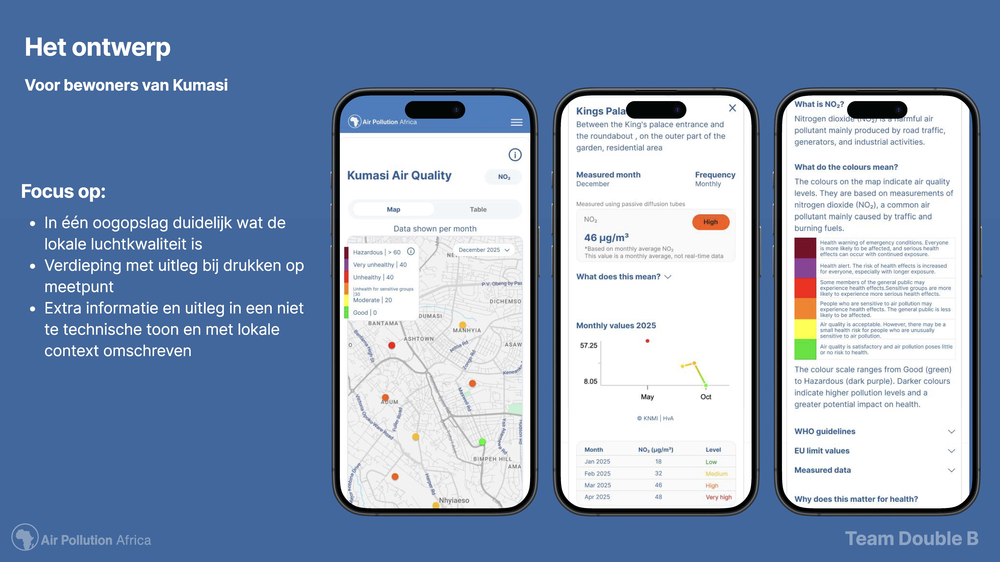
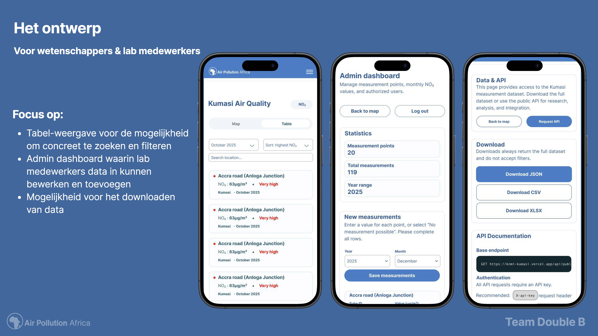

UI/UX design voor een luchtkwaliteitsplatform voor Kumasi, Ghana, in opdracht van het KNMI. Het omzetten van onzichtbare meetdata naar een toegankelijke kaart voor bewoners én een bruikbaar platform voor wetenschappers.
In Kumasi meet het KNMI al maanden NO₂-waarden op 20 locaties met Palmes-buisjes, maar deze data was nergens publiek in te zien. We begonnen met deskresearch naar hoe WHO, EU en CleanAir Fund luchtkwaliteit communiceren, en ontdekten dat Ghana geen eigen bindende NO₂-norm hanteert, een keuze die grote invloed had op hoe we de data zouden interpreteren. Een eerste ontwerp volgens strikte WHO-richtlijnen kleurde de hele kaart donkerrood, wat averechts werkte in plaats van bewustwording te creëren. Daarom ontwierp ik een schakelfunctie waarmee gebruikers zelf kunnen wisselen tussen WHO-richtlijnen, EU-normen en een relatieve weergave binnen Kumasi.
Het resultaat: een interactieve kaart met kleurcodering als eerste laag, en gedetailleerde context, historie en meetmethode bij een klik op elk meetpunt — zodat zowel bewoners als onderzoekers op hun eigen niveau met dezelfde data kunnen werken..
De focus lag op heldere informatiestructuur en gebruiksvriendelijkheid voor zowel eindgebruikers als professionals.
Link naar volledige case study: Figma

